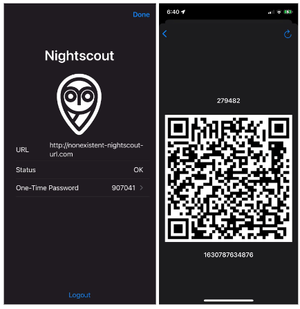
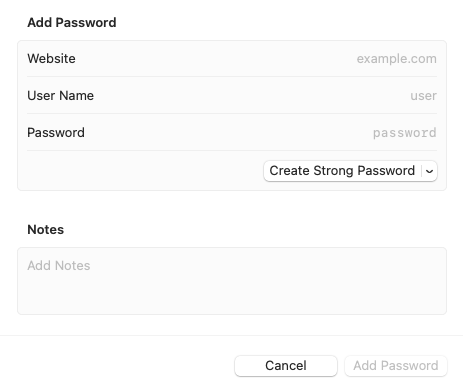

Remote Commands
Requirements¶
All remote commands require the configuration steps from Remote Configuration.
- A new One-Time Password (OTP) is required for each remote command that issues a bolus or adds a carb entry
- The OTP updates every 30 seconds
- Both the sending device and the Looper's phone must have automatic time enabled
- Remote Overrides do not require a One-Time Password (OTP)
- There are some versions of Nightscout that provide a row for entry of an OTP for Temporary Override in the Nightscout Careportal
- Leave that row blank
Do I have to use Loop Caregiver?
There are a number of methods for using remote commands.
Things everyone needs to know are covered on this page, so you should read it regardless of how you plan to issue remote commands.
If you decide on Loop Caregiver, review both this page and Loop Caregiver page.
QR Code¶
On the Looper's phone, Nightscout must be included under the Loop -> Settings -> Services section. Navigate to Services and select Nightscout. Tap on the One-Time Password row to view the QR code.
When you need to configure your authentication method, you can either use a saved QR screenshot or scan the QR on the Looper's phone.
Options:
- Have your Looper (or at least their phone) available
- Save a screen shot of their QR code
- Keep this secure
- Do not share the QR screen shot when asking for help

While you are on the Settings -> Services -> NightScout screen, notice that the 6-digit number on the One-Time Password row updates every 30 seconds.
Set up an Authentication App¶
You need to set up an authentication app to generate one-time-passwords for remote bolus and carbs.
One of the nice features of Loop Caregiver is that it handles the one-time password (OTP) requirements for you.
But even if you choose to use Loop Caregiver, you should configure an authentication app for cases where you don't have access to your Loop Caregiver phone.
There are several authentication apps that support one-time passwords.
Apple Keychain¶
If you are using a iPhone or Mac to issue remote commands through a browser or Nightscout app, you can use the Apple Keychain which has native support to store passwords and generate one-time passwords.
To setup your Nightscout credentials in Apple Keychain:
On the Caregivers device (iPhone or Mac):
- Go to Apple Settings -> Passwords
-
Tap the + Button up top to add a new Password

-
You will enter your Nightscout credentials
- Website: Enter a portion of the Nightscout URL, without the leading “https://”
- Username: Enter the full Nightscout URL including the leading “https://” part
- Password: Enter the API_SECRET for the Looper's Nightscout site
- Tap Done
- Next, you are offered a screen that allows you to set up a
Verification Code- If you need to come back later, you can find that screen again
- Go to Apple Settings -> Passwords -> Tap the row with your Nightscout URL
- Tap “Setup Verification Code”
- This is where you can scan your QR code from the Looper's phone or the saved QR screenshot
- As soon as the camera reads the QR code, an OTP will begin to appear
- If the Looper's phone is handy, wait a cycle or two and ensure the 6-digit OTP on the password screen matches that on the Looper's phone and they update at the same time
- Click Passwords on upper left to return to the prevous screen
- Select Passwords Options
- Enable the
Autofill Passwordsand checkKeychain
- Enable the
Using Safari¶
- When you use Safari to view your Looper's Nightscout site and choose the Careportal ()
- Choose a remote command from Event Type drop-down menu (remote commands are at the bottom of the list)
- The OTP will be offered to you for every row - ignore it when entering Carb amount or Absorption Time, or Bolus Amount
- Select it for the OTP row
- Note that OTP is not required for Remote Overrides - leave that row blank
Other Authentication Apps¶
There are other Authentication apps available. Here’s a few options that you can download from your phone’s app store:
- 1Password
- Authenticator
- Authy
FAQs for all Remote Commands¶
-
If I have multiple Nightscout sites because I support multiple people with T1D looping, do I need multiple APNs Keys?
Answer: No. If you support multiple people using Loop, you can use the one APNs key in each of their Nightscout sites. -
How can I tell if it worked?
Answer: You should see your override pill in Nightscout, with the NEXT Loop cycle, reflecting that the desired remote action took place. If you are near the Loop app, you should see the new override within less than 30 seconds or so.
FAQs on Remote Overrides¶
Don't forget to read Loopdocs: Overrides.
For remote overrides in particular:
-
Can I set a different override in Nighscout than I have programmed into Loop app?
Answer: No. You will only be able to enact override presets already programmed into the Loop app. -
If I didn't start the override in Nightscout (it was started in Loop itself), can I still use Nightscout to cancel it?
Answer: Yes. You can cancel an override set in Loop with a Nightscout-set cancel "temporary override" command in the careportal. -
Can I replace an override set in Loop with an override set in Nightscout?
Answer: Yes. -
Can I see on Nightscout when a temporary override has been set using the looper’s phone?
Answer: Yes. There will be a grey bar with the name of the override noted and the Loop Pill will display the targets and duration. Remember, there is a KNOWN issue with the grey bars, so use the pill as your best guide. -
Can a looper cancel a remote override?
Answer: Yes. They can tap the heart icon in Loop so that it is no longer highlighted. This turns off the override, regardless of where it was initiated. -
I set a remote override in Nightscout but the Looper tapped the heart symbol in the Loop app, so the override turned off. Will the override get reinstated the next time Loop completes with internet access?
Answer: No. The APN is only sent once. You can set the remote override again if need be. -
Can I schedule a remote override ahead of time using Nightscout?
Answer: No. When you set a remote override in Nightscout, it starts immediately and lasts for the duration programmed for that override in the Loop app. You can only set an override in advance using the Loop app.
Remote Commands¶
Remote Commands to deliver a bolus or add a carb entry require a One Time Passcode (OTP).
Minimum Versions: Loop 3 and Nightscout 14.2.6
If your Nightscout version does not meet that minimum requirement, remote commands might be accepted but if they are, the time for the commands is always the current time. In other words, Carbs in the Past or Future might be accepted, but would be entered at the current time on the looper's phone.
Warnings on Remote Commands¶
Duplicate Delivery Risk
We want to highlight a very important risk before you get started.
For safety, always assume a previous remote carbs/bolus was delivered. For motivation think of the following example:
- You send a 5-unit remote bolus.
- The bolus is delivered to the Looper.
- Nightscout is having a temporary technical issue and doesn't show the bolus was received.
- You are watching Nightscout and you don’t see a delivery so you assume it failed.
- You send another remote 5-unit bolus.
- The second 5-unit bolus is delivered to the Looper (10 Units total).
You can see the danger of sending duplicate bolus/carbs so be careful. If a remote bolus/carb entry doesn’t show in Nightscout, use your own judgment on whether enough time has passed to try again.
Remote Bolus, Then Remote Carb¶
If sending both, choose Bolus then Carbs
If you plan to send a carb command remotely and later decide to issue a bolus command - STOP and consider.
There are 2 scenarios of concern that could lead to too much insulin:
- Looper is using the
Temp Basal(temporary basal) Dosing Strategy- Loop will initiate a max
Temp Basalwhen it receives the carbs remote command - Your bolus will be accepted and take place in addition to the high temporary basal
- Loop will initiate a max
- Looper is using
Automatic BolusDosing Strategy- Loop will initiate 40% of the recommended dose when it receives the carbs remote command
- Your bolus will be accepted and take place in addition to an automatic boluses
Typically, sending a remote carb entry alone is sufficient for Loop to know about the carbs and begin to dose for them.
If you really want to both bolus for carbs and enter carbs, then do it in that order.
- The bolus, when accepted, will cause Loop to issue a 0
Temp Basal(temporary basal) (which is "safer") - The carbs, when accepted, will cause Loop to respond to the carbs while including the bolus already delivered and included in the Looper' IOB
❗️ Remember - you should pause at least 60 seconds between remote commands or the One-Time-Password (OTP) will be rejected as having already been used.
Using Remote Commands¶
There are four ways you can trigger your commands remotely; Loop Caregiver (link takes you to a new page), Nightscout Careportal, Shortcuts, and IFTTT.
Loop Caregiver¶
Click the link above to read more about Loop Caregiver.
Nightscout Careportal¶
To use remote commands in the Careportal, you must configure Nightscout site according to the directions here in Loopdocs in addition to setting up the Remote Configuration.
Pay particular attention to these entries in the ENABLE line: override careportal Loop. The order of the words in the ENABLE line is not important.
You'll also need to have your site authenticated so that your Careportal is active to send remote overrides .
Once authenticated by entering your API_SECRET, there is a plus sign () in the upper right corner of your site. That is your Careportal. Tap the Careportal plus sign () and then scroll down in the event type menu to find Temporary Override.
Within there, you will find all your Loop override presets already loaded for you.
Start and End Remote Override¶

The Looper will see a banner notification that a remote command has been sent with details about that command and whether it succeeded (or not).

Canceling an override through Nightscout careportal is as simple as selecting the event type Temporary Override Cancel and submitting.
Command Remote Bolus or Carb Entry¶
Open your Nightscout site in a browser or app.
- Tap the Careportal plus sign () and then scroll down in the
event typedropdown menu to findRemote Carb EntryorRemote Bolus Entry - Fill out the treatment log until you get to the OTP row
- When using Safari, the OTP code is automatically offered - might need to tap twice
- For other authentication apps (Authenticator, 1Password, etc)
- Tap on the code in the authentication app and copy to your clipboard
- In Nightscout and paste that code into the OTP box
- Click “Submit Form”
Note that Loop will honor both the current OTP code and the one that just expired.
If the Looper is with you, you can see the notification on their phone. You can see the entry on the Loop carbohydrate or the insulin displays to see if it went through.
If the Looper is not with you, you should see the result in the Nightscout dashboard within 5 minutes.
Shortcuts¶
If you want to make your life SUPER AMAZING, check out using the iPhone's Shortcuts app. The Shortcuts app is for making little automations (like mini apps) that can integrate parts of your life. In this case, we've written a couple of shortcuts for you that integrate Loop overrides with Nightscout.
Important Note
Before you click on the download file below...save yourself some trouble.
- Download the Shortcuts app if you don't have it yet
- Choose to run any shortcut from the Gallery. It can be the laundry timer...I don't care, just pick one shortcut and run it.
- THEN, go to download the shortcut of your choice below.
ℹ️ The shortcuts that aren't run through the Gallery option are called "untrusted". And you need a slider in your iPhone to trust the "untrusted" shortcuts you would be downloading here.
But...in a lovely iOS glitch...that slider doesn't appear unless you've run a trusted shortcut first. So, run one now. - Then, this slider will now be visible in the iPhone Settings app under the Shortcuts app menu.
- When you will see the message "This shortcut cannot be opened because your Shortcuts security system settings don't allow untrusted shortcuts"
- Open iPhone Settings and scroll down the list and tap the Shortcuts menu to turn on "Allow Untrusted Shortcuts".
Click these links on your iPhone and you'll be prompted to download the premade shortcuts (assuming you open the links in Safari browser on iPhone):
Comprehensive Loop Shortcut includes Set Remote Override, Cancel Override, Loop Troubleshooting Tips, Quick Text options, Manual BG entry, Bookmarks to websites, etc.
And if you want to save one click to get to these one functions more directly: these shortcuts are simplified to offer only one function:
Set Remote Override only shortcut
A couple notes about these shortcuts:
You need to open those links in the Safari browser on your iPhone. A confirmation will show to initiate the download.
After the download finishes, tap the button marked AA near your Safari address bar and tap Downloads (downloads) to find and open the downloaded Shortcut.
Wait a bit, and the shortcut's inner guts will be there...scroll ALL the way down to the bottom to click the button to save the untrusted shortcut
- When you enter your Nightscout URL in the
URLfield of the Loop shortcut setup, make sure you don't include a trailing/, or the API calls to Heroku will error out. - When a remote override is set properly, you'll see an
okmessage displayed. If there is an error, you'll see an error message. Most errors will be that you have anAPI_SECRETwrong (make sure there isn't a space at the end of yourAPI_SECRETthat you don't see) or you failed to do the steps to setup Nightscout and update your Loop app as described in steps 1-3 above. - You can absolutely customize these bits and pieces within the shortcut. Change the text messages, and change the links... It is totally up to you.
IFTTT¶
If you want to walk uphill both ways in the snow carrying bags of uneven groceries, you can also set overrides remotely by using If This, Then That (IFTTT) integration. By using IFTTT, you can have single button presses on your phone that will set an override, log a cannula change, log a sensor change and much more.